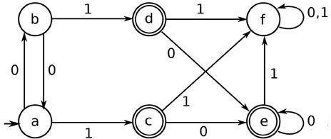

First of all, I explain what the finite automata (FA) is. Then I will be defined what is DFA after that I exp how to minimizate DFA.
A finite automaton (FA) is a simple idealized machine used to recognize patterns within input taken from some character set or alphabet. The job of an FA is to accept or reject an input depending on whether the pattern defined by the FA occurs in the input. So we can say Finite Automata(FA) is the simplest machine to recognize patterns.
A Finite Automata consists of the following : Formal specification of machine is : { Q, ∑, q, F, δ }. Q : Finite set of states. ∑ : set of Input Symbols. q : Initial state. F : set of Final States. δ : Transition Function.
We can represent a FA graphically, with nodes for states, and arcs for transitions. We execute our FA on an input sequence as follows:
Deterministic finite automata - a state machine for which each transition for a state is uniquely determined by it’s input symbol as each state can only have a single move per input symbol. In a DFA, for a particular input character, machine goes to one state only. A transition function is defined on every state for every input symbol. Also in DFA null (or ε) move is not allowed, DFA can not change state without any input character.
DFA minimization stands for converting a given DFA to its equivalent DFA with minimum number of states.

We draw a table for all pair of states.
| a | b | c | d | e | f | |
| a | ✓ | |||||
| b | ✓ | |||||
| c | ✓ | |||||
| d | ✓ | |||||
| e | ✓ | |||||
| f | ✓ |
We mark the state pairs.
| a | b | c | d | e | f | |
| a | ||||||
| b | ||||||
| c | ✓ | ✓ | ||||
| d | ✓ | ✓ | ||||
| e | ✓ | ✓ | ||||
| f | ✓ | ✓ | ✓ | ✓ |
We will try to mark the state pairs, with green colored check mark, transitively. If we input 1 to state ‘a’ and ‘f’, it will go to state ‘c’ and ‘f’ respectively. (c, f) is already marked, hence we will mark pair (a, f). Now, we input 1 to state ‘b’ and ‘f’; it will go to state ‘d’ and ‘f’ respectively. (d, f) is already marked, hence we will mark pair (b, f).
| a | b | c | d | e | f | |
| a | ||||||
| b | ||||||
| c | ✓ | ✓ | ||||
| d | ✓ | ✓ | ||||
| e | ✓ | ✓ | ||||
| f | ✓ | ✓ | ✓ | ✓ | ✓ | ✓ |
After that, we have got state combinations {a, b} {c, d} {c, e} {d, e} that are unmarked. We can recombine {c, d} {c, e} {d, e} into {c, d, e} Hence we got two combined states as − {a, b} and {c, d, e} So the final minimized DFA will contain three states {f}, {a, b} and {c, d, e}
| q | δ(q,0) | δ(q,1) |
|---|---|---|
| -> a | b | c |
| b | a | d |
| * c | e | f |
| * d | e | f |
| * e | e | f |
| f | f | f |
Let us apply the above algorithm to the above DFA − P0 = {(c,d,e), (a,b,f)} P1 = {(c,d,e), (a,b),(f)} P2 = {(c,d,e), (a,b),(f)} Hence, P1 = P2. There are three states in the reduced DFA. The reduced DFA is as follows −
| Q | δ(q,0) | δ(q,1) |
|---|---|---|
| -> (a,b) | (a,b) | (c,d,e) |
| * (c,d,e) | (c,d,e) | (f) |
| f | f | f |
https://www.tutorialspoint.com/automata_theory/dfa_minimization.htm https://www.tutorialspoint.com/automata_theory/deterministic_finite_automaton.htm